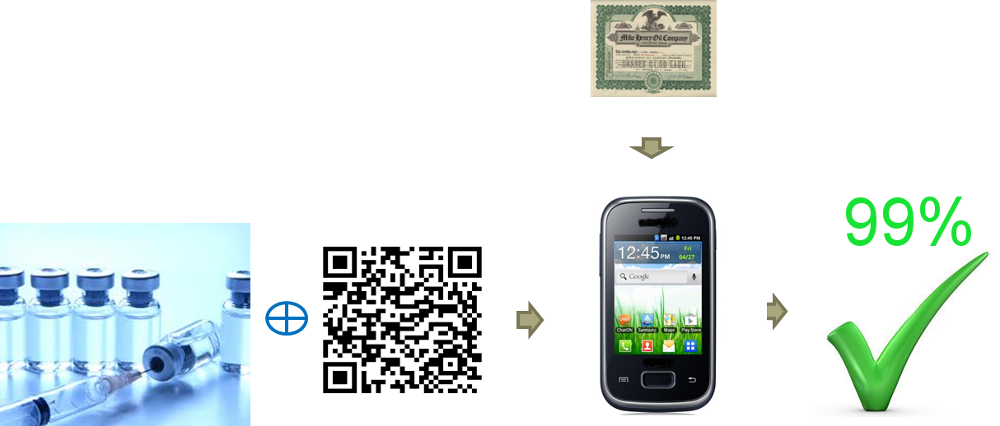
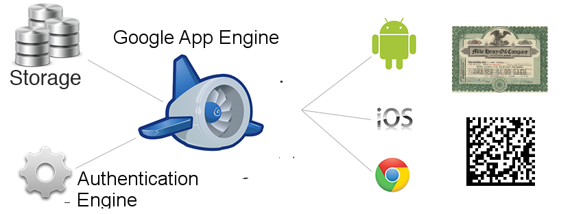

{kind=link}
Validated Inventory¶
Counterfeit product substitution is estimated to cost the global economy $1.7 trillion in 2015. Almost every category of manufactured product has been, and is being, counterfeited.
Digital movie piracy, fake watches in flea markets and counterfeit high fashion goods sold in the boutiques of Paris and Shanghai are examples of economically costly counterfeit product substitution.
More serious are counterfeit products that are unsafe. Car seat belt buckles made of inferior metal and used aircraft parts that have been substituted for new parts.
But perhaps the most pernicious and persistent problem is counterfeit pharmaceuticals. Counterfeit pharmaceuticals in Least Developed Countries (LDC) are a particularly serious problem, with studies showing counterfeit rates of some anti-malarial drugs (Artemisinin) as high as 30% in Asia [CF2012] and 50% in Africa [CF2013].
The conventional technique to combat pharmaceutical counterfeiting is Ramen Spectroscopy which analyses the ingredients of suspect pharmaceuticals. This is a powerful and effective technique but it requires expensive equipment, trained staff and can only analyse a small proportion of the suspect pharmaceuticals sold.
Introducing a powerful weapon in the fight against counterfeiting - the smart phone.
Note
Smart phones are now cheap. Spurred on by vast markets in less developed countries, phone manufacturers have aggressively cut prices. In July 2014 a smart-phone with a 1.2 Ghz dual core processor and an 8 mega-pixel camera could be purchased in India for 5,999 Rupees ($100 USD).
Using a smart-phone as a lightweight client for cloud based anti-counterfeit software:
- Enables purchasers/end-users to validate the authenticity of products.
- Enables Governments, Manufacturers and NGOs to identify where product distribution channels have been compromised.
- Implements a secure Track and Trace distribution system.
To do this, the techniques of Serialization, Location and Trust Hierarchies can be applied. These are explained below.
Serialization¶
Note
Serialization is a unique serial code affixed (generally a 2D DataMatrix Barcode) to each product package.

Serialization is a simple and powerful tool against counterfeiting. A guaranteed unique serial code, a number or text sequence, is attached to the product or aggregate packaging (carton, pallet or container).
The serial codes can be used to authenticate a genuine product.
Serial codes can also be used to track products from manufacture, through the distribution channel, to final purchase. This can be used to implement the usual tasks of distribution and inventory. Also, importantly, Track and Trace can also be used to detect where, who and when unauthorised diversion of products occurred, theft or compromise of the distribution channel through the introduction of counterfeit goods.
The image on the above left shows the format of serial coding (“SN”) of pharmaceutical retail packaging that will be introduced into the United States by 2018. The 2D Barcode carrier is a GS1 standard (ECC200) DataMatrix.
Note
As a demonstration of how serialization works, you can scan the Barcode with a freeware smart-phone barcode app such as zxing (Android). The serial code is the “SN” field.
Track and Trace, Authentication¶
Note
Track and Trace, as the name suggests, uses the product serial code to produce an audit log of all movements of a product in the distribution channel from manufacturer to consumer. This audit log is called the ePedigree of the product and confirms the integrity of the distribution channel of the product.
Note
Authentication systems use a guaranteed unique serial code to authenticate a product. Without special packaging (see Ghana, mPedigree below), serial codes printed as Text or Barcodes are not guaranteed to be unique until they can be checked against a database.
Physical Implementation of Serialization¶
Text and Barcodes
Serial codes can be implemented physically as Text or a Barcode and, most often, both. The 2D DataMatrix Barcode shown above is a GS1 standard (ECC200) Barcode and the information contained within the Barcode also follows GS1 formatting standards. This standard will be adopted in the United States and probably by Europe (EU) for serial coding pharmaceutical unit (retail) packaging by 2018.
Text and Barcodes can be printed using suitable high speed printers on existing production lines. Setup costs for manufacturers implementing serial codes are relatively cheap and ongoing production costs to print serial codes are also low. Therefore, this technology is attractive to manufacturers who need to implement serial coding on existing packaging lines. Another advantage of printed barcodes is that they are can be read and processed using freeware software on relatively low-end smart phones.
An obvious attack on printed serial codes by a counterfeiter is to duplicate a valid code on the counterfeit packaging. Therefore, if the serial code is implemented as Text or a Barcode on the unit packaging then the serial code must be confirmed as unique. This is done by marking the code off on a database when it is purchased or used. If a serial code previously recorded as purchased or used is again presented on a package for purchase or use, then counterfeiting is immediately detected.
RFID Chips
Serial codes can be uniquely encrypted into RFID chips. Every RFID Chip carries a permanent unique ID code and cannot be copied. RFID chips also have a significantly larger data payload than Barcodes. RFID chips have unbreakable on-chip encryption engines implemented in hardware (3DES). RFID chips are reliably scanned in a production line environment (and at relatively longer distances).
Note
Serial codes encrypted onto RFID chips can be easily authenticated and verified as unique without reference to an external database (they can be authenticated off-line). RFID chips are the ‘gold standard’ for serial code authentication.
RFID chips are considered expensive at a cost of around USD$0.10 per RFID label in volume (from $0.01 to $1.00 depending on volume, type and packaging, source: Alibaba.com, July 2014). However, they are cheap enough to be widely used in disposable tickets in urban transport systems. RFID chips can be read/written by most high-end Android phones - termed Near Field Communication (NFC). Low and mid-level phones currently do not support NFC in hardware. This is the disadvantage of RFID chips, they cannot be accessed using universally available hardware (a cheap smart phone). This would be an issue for universal (purchaser/user) product authentication. But would not be an issue in a secure Track and Trace system.
Sequences of Serial Codes.¶
In order for serial codes to be secure:
- A counterfeiter must not be able anticipate or reproduce the sequence of serial codes.
- For a serial code to authenticate a product the verifier (purchaser/user/distributor) needs to be able to confirm that only the Manufacturer, Government or NGO (the Trusted Entity) could have generated the serial code.
Note
Anecdotally, some US pharmaceutical manufacturers are planning to produce sequential serial codes when implementing the requirements of the DQSA Act (see below). This is egregiously careless; sequential codes are trivially easy to counterfeit and cannot be authenticated.
Random Sequences
European and most United States manufacturers have responded to this requirement by producing serial codes that are random sequences (requirement 1). Authenticating the serial code and thus the product is done by referring back to a database with a list of generated serial codes.
Although this achieves both requirements, it requires secure access to the serial code database.
Non-Interactive Zero Knowledge (NIZK) Encryption
A better serial coding solution is to use is a ‘Non-Interactive Zero-Knowledge proof’ (NIZK) verification algorithm that does not need a database link. Using this technique, the NIZK algorithm verifies that the serial code was generated by an authorised Manufactuer, Government or NGO without the need to communicate and without knowing how the serial code was generated. Although this is somewhat more complex, well proven cryptographic software libraries are readily available (never attempt to write cryptographic software in-house). The advantage is that the verification process is greatly simplified and more secure.
NIZK serial codes only provide proof of uniqueness if implemented on an RFID chip. Text and Barcodes can always be copied and these must be checked against a database to establish uniqueness. However, the counterfeiter does not know the code sequence, so it is likely they will only copy one or a few codes. So Text and Barcodes with an NIZK serial code can provide a partial authentication with a reasonable level of confidence. The partial authentication scans can then be queued and checked against a database for uniqueness when the phone (or scanning device) is on-line.
Potential Problems with Serial Coding¶
For serial codes to work, a serial code must be on the final use packaging. This may seem obvious but serial codes have not yet been mandated in the Least Developed Countries where the problem of counterfeiting is most severe. In addition, countries where most counterfeit pharmaceuticals are sourced; Nigeria, Pakistan, China and India have not mandated the introduction of serial coding. This could be overcome by Governments or NGOs requiring all packaging to be serial coded, or alternately, that serial codes be manually affixed to packaging.
The problem with the authentication step is again obvious. Unless counterfeit packaging is checked when purchased or used, then serial coding cannot be authenticated (See Turkey below). The US and EU will address this problem by requiring pharmacists and healthcare professionals to scan serial codes at point of purchase or use. However, if serial code authentication is performed sparsely and haphazardly then counterfeits may not be identified or may only be identified after many counterfeit units have been sold.
Serialization and Pharmaceuticals¶
Ghana¶
{kind=link}
Simple and Effective Authentication
The mPegigree system was the first use of a serialization to authenticate pharmaceuticals. It was launched in 2007 in Ghana by Ghanaian entrepreneur Bright Simons. It is brilliantly simple and cost effective. A text serial code is placed under a tamper proof scratch off covering. The pharmaceutical purchaser scratches off the covering to reveal the serial code. They then enter the code as an SMS text message which is sent to a toll free number. A return SMS message authenticates the purchase.
The mPedigree system was introduced into Nigeria in 2010 and India in 2011. Kenya is currently (July 2014) introducing the system and there are advanced plans to introduce mPedigree into Rwanda and Uganda.
By its design, the serial code is only revealed by the purchaser and the mPedigree system cannot be used to implement a Track and Trace system.
Turkey¶
{kind=link}
Track and Trace but no Authentication, a Cautionary Tale
The pioneering use of serial codes to implement a pharmaceutical Track and Trace system was with the Turkish Ministry of Health who developed the ITS system (also called the Medical Tracking System in English). The primary objective of the system was to reduce insurance fraud by pharmacists reporting inflated sales. It is not currently compulsory for pharmacists to authenticate medicines in the ITS system.
There are claims that the system has assisted police apprehend counterfeiters: ‘Over the last two years, police have seized approximately 2 million packages of counterfeit medications, worth 6 million Turkish Lira, which were sold either on the internet, by patients’ relatives and even in some pharmacies, which acted as intermediaries for counterfeiters.’ (Turkish SEtimes).
It is worth noting that apparently the counterfeit pharmaceuticals were not introduced into the supply chain by manufacturers or distributors, but by vendors - retail pharmacists. We will see this theme again when the supply of counterfeit pharmaceuticals in regional Uganda is examined.
In December 2013 counterfeit cancer drugs were found to have been sold to cancer patients. Some of the counterfeit cancer drugs reached the United States via a circuitous route and American citizens were implicated in the scam.
It is worth quoting the response of Turkish drug manufacturers at length:
‘Turkey’s Association of Research-Based Pharmaceutical Companies (AIFD) issued a statement in the wake of the operation noting that the counterfeiting operation is “alarming”, particularly as the country has implemented a national programme of medicine serialisation via 2D barcodes - the drug tracking system (ITS) - which should make it hard to carry out this sort of illegal activity.
‘The AIFD points to a potential weakness in the system in its statement, noting: “to ensure impeccable functionality of those safeguards, the 2D barcode on a product purchased must be scanned and checked on the system at the pharmacy to verify its authenticity, since having a 2D barcode alone may not necessarily attest to the authenticity of the product; the 2D barcode must be verified on the system.’
‘It recommends that all 2D barcodes on medicine packs are scanned and verified in pharmacies, and the product checked to make sure it has not been re-packaged or removed from the original packaging.’ [my emphasis]
There are related two points to be made from the Turkish experience. Firstly, that a voluntary system will be ignored or misused by compromised vendors (pharmacists). Secondly, once again the problem appears at the vendor level and does not appear to involve higher levels of the distribution channel.
United States and Europe¶
{kind=link}
A Standards Swamp
The United States and Europe (EU) have both mandated the serialization of pharmaceuticals by 2018.
The United States
President Barack Obama signed H.R. 3204, the Drug Quality and Security Act (DQSA), into law in November 2013. Pharmaceutical manufacturers must have serial codes on unit packaging by November 2017.
The relevant parts of the legislation concerning serialization are reproduced below.
‘SEC. 581. DEFINITIONS’: ‘(14) PRODUCT IDENTIFIER .... means a standardized graphic that includes, in both human-readable form and on a machine-readable data carrier ....the standardized numerical identifier, lot number, and expiration date of the product.’ and ‘(20) STANDARDIZED NUMERICAL IDENTIFIER .... means a set of numbers or characters used to uniquely identify each package or homogeneous case that is composed of the National Drug Code .... combined with a unique alphanumeric serial number of up to 20 characters.’
In other words the specification is consistent with a GS1 formatted DataMatrix, although machine readable could also apply to a RFID chip. Importantly - there is no specification on how the ‘STANDARDIZED NUMERICAL IDENTIFIER’ is to be generated. Simply that it is a ‘unique alphanumeric serial number of up to 20 characters.’. This could apply to a sequential sequence.
The relevant parts of the legislation concerning authentication using serialization are reproduced below.
‘SEC. 582. REQUIREMENTS’ ,(b)(4)(C): .... upon receiving a request for verification from an authorized repackager, wholesale distributor, or dispenser that is in possession or control of a product ...., a manufacturer shall....notify the person making the request whether the product identifier, including the standardized numerical identifier, that is the subject of the request corresponds to the product identifier affixed or imprinted by the manufacturer.’
In other words the manufacturer only needs to respond to ‘receiving a request for verification from an authorized’ [entity]. Authentication will not be available to purchasers or end-users.
Europe
Directive 2001/83/EC and Directive 2011/62/EU of the European Parliament has mandated the introduction of pharmaceutical anti-counterfeit technology (serialization). Under the European federal system these directives must then be passed into legislation by each of the member countries and it is expected that this will be completed by 2017.
An alliance of European pharmaceutical organisations (EAEPC-EFPIA-GIRP-PGEU) has responded with a proposal for the technical specifications of serialization.
The data carrier will be a GS1 (ECC200 or ISO/IEC 16022) 2D DataMatrix (no provision for RFID). Serial codes will be randomly generated (good). Where the European proposal differs from the Americans is the product identifier. The US has a National Drug Code (NDC) which is easily extended to a GS1 Global Trade Identification Number (GTIN). However, the Europeans have a variety of legacy national drug codes that cannot be converted to a GTIN.
Location¶
{kind=link}
All smart-phones have location information. Low-end smart phone calculate location from cell phone towers, this has an accuracy of 100-500 metres (Google documentation). Mid and high-end smart phones generally have GPS built-in and this has an accuracy of less than than 100 meres (Google documentation). In practice, GPS accuracy is frequently better than 20 meters. Note that for on-line pharmacies, location could also be a URL.
Note
The frequency of counterfeit products is highly dependent on location and specific vendor. For example, in Mbarara district, Uganda, the probability of buying counterfeit antimalarials doubles if purchased from a vendor who has previously sold counterfeit antimalarials.
{kind=link}
The table above shows the frequency of antimalarial drugs (Artemisinin-based Combination Therapy - ACT) in 4 districts in Uganda. The frequency of counterfeit drugs varies considerably with district (All Shops column). Researchers [CF2013] in Uganda also find that purchasers overestimate the quality of antimalarials purchased. In addition, there is only a weak or non-existent relationship between pharmaceutical quality and price [CF2011]. Presumably this is to prevent the purchaser receiving adverse signals about the quality of the pharmaceuticals from price.
The most interesting finding of [CF2013] is that the probability of of purchasing counterfeit antimalarials doubles if the vendor has previously sold counterfeit antimalarials (Conditional column).
The immediate implication is that some vendors are not just passive conduits of counterfeits sourced further up the distribution channel, but are actively facilitating the sale of counterfeit antimalarials. A major objective of any Track and Trace system should be to modify vendor behaviour.
An open user-based review system such as Google maps or the travel site Trip Advisor cannot be used to assess the quality of vendors.
- Purchasers (in general) lack the technical capability (Ramen Spectroscopy or similar) to properly analyse and review pharmaceuticals.
- Non-compliant vendors will simply arrange for false reviews to be posted.
This can only be done with a formal compliance and audit system where purchased pharmaceuticals are periodically analysed for quality. Vendors who are compliant with quality standards are granted ‘authorised dealer’ status, see Trust Hierarchy below.
Vendors should be highly motivated to gain ‘authorized dealer’ status because the Track and Trace application will show a higher probability of purchasing genuine pharmaceuticals from ‘authorized dealers’.
There are 14 pharmacies in Mbarara township, from the table above, half of them sell genuine pharmaceuticals. These vendors should be rewarded with ‘authorized dealer’ status.
Trust Hierarchy¶
{kind=link}
Trust Hierarchies work like an authorized car dealership. Dealers comply with car manufacturer quality standards and in return are granted the privilege of ‘authorized dealer’. This is economically beneficial to the dealer; customers preferentially purchase from ‘authorized dealers’ because they know the dealer meets manufacturer quality standards.
The Trust Hierarchy formalizes this relationship using cryptographic certificates that can be conveniently transferred and authenticated. The top of the Trust Hierarchy is the Trusted Entity; a Government, Manufacturer or NGO who issues ‘authorized dealer’ certificates to distributors and vendors who meet quality standards. The Trusted Entity and can also authenticate certificates.
Note
Certificates grant distributors and vendors ‘authorized dealer’ status. They allow the Trusted Entity to securely audit the transactions of distributors and vendors. They also provide vendor quality information to a purchaser.
{kind=link}
Note
Certificates are implemented as X509 certificates. These are used in your web browser for secure communication using https. You can view X509 certificates by connecting to a website using https and clicking on the padlock symbol.
There are three types of authorisation certificates in the trusted hierarchy.
- Trusted Entity Certificates [X.509 terminology - a Certificate Authority]
This certificate is at the apex of the trust hierarchy. It has the ability to cryptographically verify subordinate certificates and can issue and sign new subordinate certificates.
- Distributor Certificates [X.509 terminology - Intermediate Certificate]
In a global distribution network it is unrealistic for the Trusted Entity to verify and issue certificates to all (particularly the lower) levels of the distribution channel. Therefore trusted authorised distributors are empowered to issue certificates further down the distribution channel. These lower level certificates are signed by the trusted distributor issuing the certificate and, importantly, cannot be repudiated by the issuer. It is implicit that the trusted distributor is responsible for the behaviour of subordinate distributors and vendors holding certificates they have issued.
- Subordinate (Vendor) Certificates [X.509 terminology - User Certificate]
This certificate cannot issue subordinate certificates. Typically these certificates are issued to low-level distributors and vendors.
Products moving through the distribution channel are scanned using trust certificates and this creates a log of product movement through the distribution channel. This can be used to identify where counterfeit products have entered the distribution channel or where products have been diverted or stolen. The Trusted Entity can then take corrective action by revoking or restricting the authorization certificates of distributors or vendors in the compromised section of the distribution channel.
Functionality¶
{kind=link}
The functional steps are:
- (Optional) The product cryptographic serial code is scanned by a phone, tablet or barcode reader.
- (Optional) The vendor/distributor authorization certificate is verified.
- This information along with product, location and device is sent to a cloud server.
- The product Authentication Rating of between 0% (a counterfeit product) and 100% (a genuine product) is returned.
{kind=link}
{kind=link}
Implementation¶
3 technologies are combined to defeat counterfeit products.
- Portable Computing
- Cloud Storage and CPU
- Cryptographic Verification
The application is implemented as an application running on Google App Engine (GAE).
{kind=link}
The software components are:
- A thin client app that captures the serial code as a Barcode, RFID chip or Text input, depending on device capability. It then transmits this and other data (time, location, device and trust certificate) to the GAE back-end.
- Back-end software hosted on GAE then stores all entered serial codes and implements verification/credibility logic.
Note
All processing and verification is done by the back-end software. This permits low-end smart phones/tablets to be used in verification.
| [CF2012] | Pierre Ambroise-Thomas, The Tragedy Caused by Fake Antimalarial Drugs, Meditterr. J. Hematol. Infect. Dis., 2012. |
| [CF2013] | (1, 2, 3) Martina Björkman-Nyqvist Jakob Svensson David Yanagizawa-Drott, The Market for (Fake) Antimalarial Medicine: Evidence from Uganda, http://www.povertyactionlab.org/publication/market-fake-antimalarial-medicine-evidence-uganda |
| [CF2011] | Bate R., G. Z. Jin, and A. Mathur, 2011, Does Price Reveal Poor-quality Drugs? Evidence from 17 countries, Journal of Health Economics, 30(6):1150-63. |